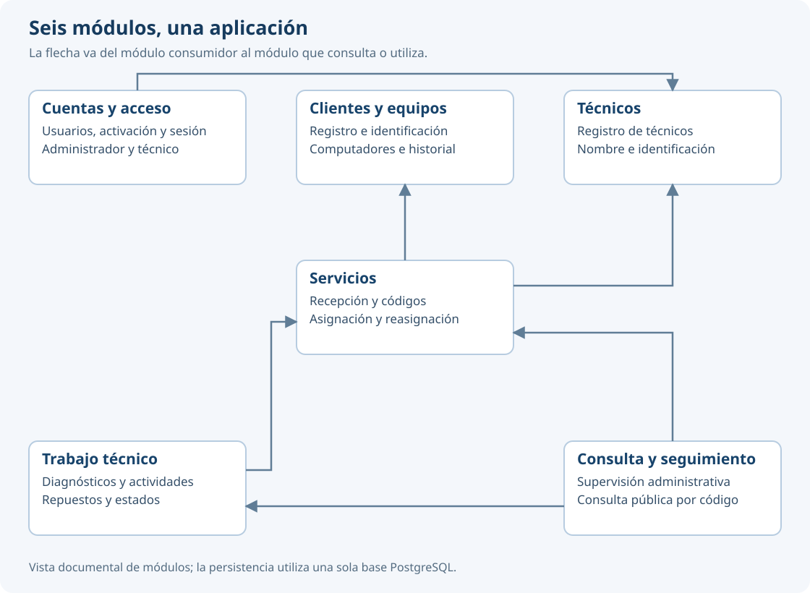

Arquitectura y patrones
Valtraza es un monolito modular con una sola base PostgreSQL. Nginx recibe la solicitud, public/index.php inicia Laravel y las rutas despachan a controladores. Blade presenta el resultado; los controladores coordinan la validación y los servicios; Eloquent conserva los datos.
| Capa | Ubicación y función |
|---|---|
| Presentación | resources/views, componentes Blade y recursos de public/assets |
| Control | routes, app/Http/Controllers, middleware y Form Requests |
| Lógica de negocio | app/Services, app/States, observers y reglas de la operación |
| Acceso a datos | Modelos Eloquent de app/Models y consultas encapsuladas |
| Datos | PostgreSQL; esquema, restricciones e índices de database |
Las capas de lógica y acceso a datos forman el modelo de MVC. La autorización se exige en rutas y solicitudes; las operaciones sobre un servicio vuelven a comprobar al encargado dentro de la transacción.
| Módulo | Responsabilidad e interfaces utilizadas |
|---|---|
| Clientes y equipos | Clientes, computadores e historial; ofrece RegistroClientesEquipos |
| Técnicos | Registro de técnicos; ofrece RegistroTecnicos |
| Cuentas y acceso | Usuarios, activación y sesión; utiliza RegistroTecnicos |
| Servicios | Registro, códigos, asignación y pertenencia; utiliza Clientes y equipos y Técnicos |
| Mantenimientos y reparaciones | Diagnósticos, actividades, repuestos y cambio de estado; utiliza Servicios |
| Consulta y seguimiento | SupervisionServicios y ConsultaPublica agregan lecturas de Servicios y LecturaAvance |
Servicios no depende de Mantenimientos y reparaciones. La condición de completar con diagnóstico se resuelve en la operación de trabajo técnico, evitando una dependencia circular. La consulta pública construye una salida con campos permitidos, sin entregar modelos completos a la vista.
| Patrón | Aplicación concreta |
|---|---|
| MVC | Separación de vistas, controladores y modelo |
| Controlador frontal | Entrada por public/index.php |
| Plantilla maestra | Layouts base, administrador, técnico y público |
| Cadena de filtros | Middleware de sesión, autenticación, rol, CSRF y cabeceras |
| Validación de formularios | Form Requests con reglas y mensajes en español |
| Active Record | Modelos Eloquent con sus claves y relaciones |
| Capa de servicios | RegistroClientesEquipos, GestionServicios, RegistroTrabajoTecnico y servicios de consulta |
| Observador | Generación de códigos y notificación de nuevos registros de avance |
| Estado | Clases Pendiente, EnCurso y Completado para aplicar el estado del servicio |
Los detalles del cambio de estado y la asignación están descritos en Trabajo técnico. El resultado de GitDiagram compartido por Johan se contrastó con el código de la entrega. Las diferencias, la versión de referencia y la vista corregida se documentan en el análisis de GitDiagram.
Vista de módulos

La vista resume las dependencias entre los servicios de los seis módulos. No sustituye el análisis final con GitDiagram ni representa cada llamada a un controlador o modelo. Los tres actores ingresan por rutas con los permisos correspondientes.